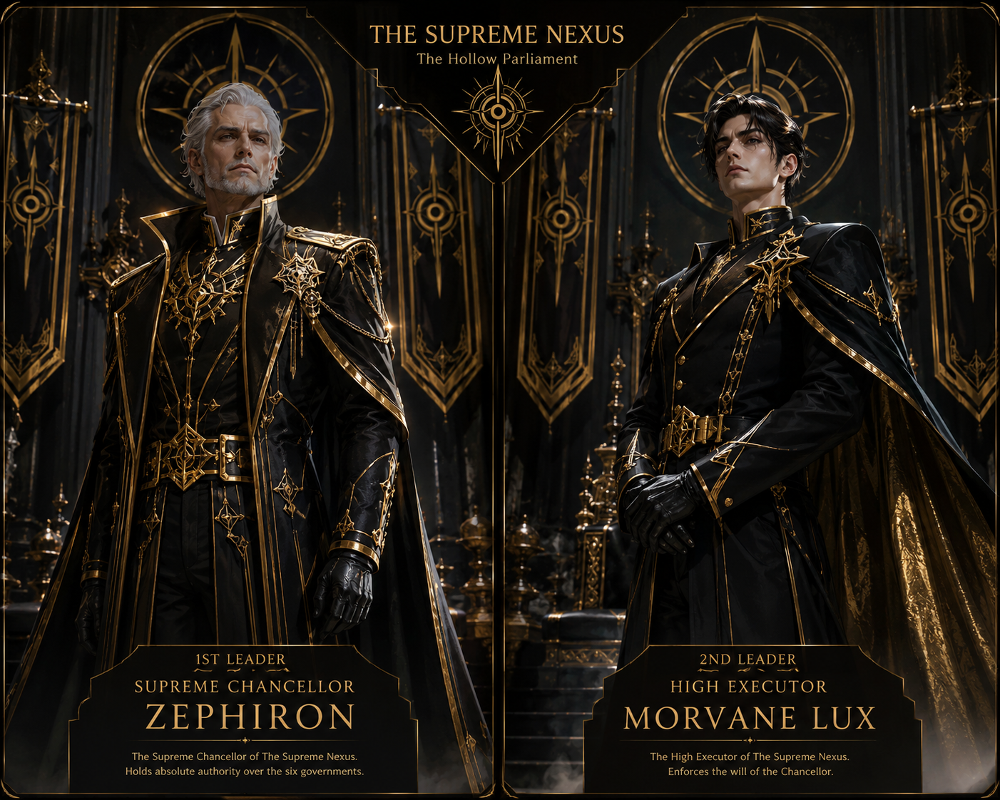

Government 01
The Supreme Nexus
Absolute control - Mystery - Supreme authority
The highest government in the world. Hidden from ordinary society, the Supreme Nexus secretly controls all six governments and makes the final decisions on wars, heroes, experiments, and global security.
- Seat / House
- The Hollow Parliament
- Colors
- Royal Black & Gold
- First Leader
- Supreme Chancellor Zephiron
- Second Leader
- High Executor Morvane Lux